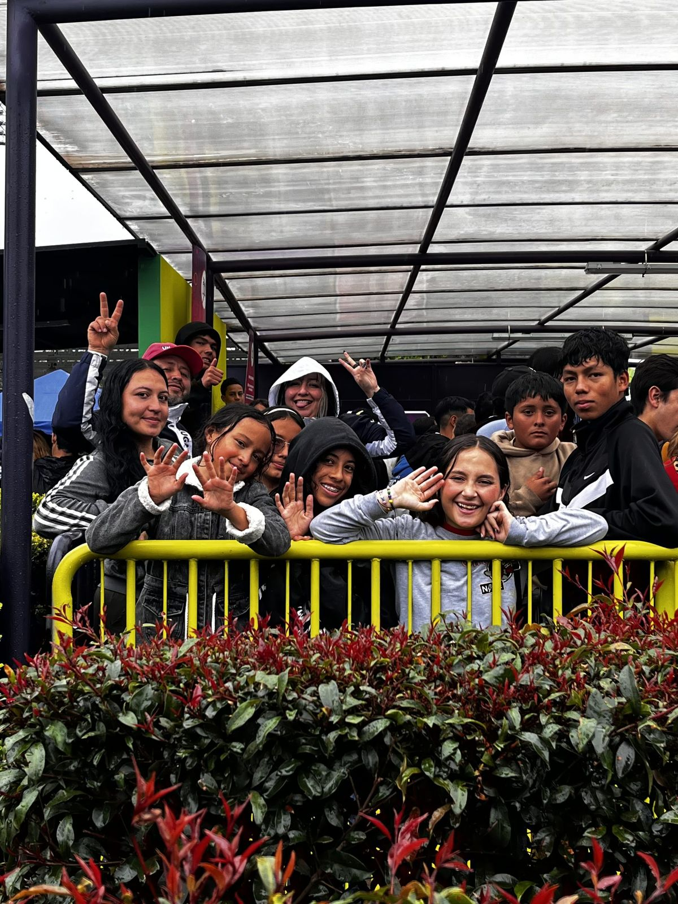

Patrocina un programa con tu empresa
Con $300.000 al mes tu empresa patrocina uno de nuestros programas y recibe cada trimestre un informe con cifras de impacto. monto por confirmar
Te llevamos al formulario de patrocinio actual de la fundación. Si prefieres, escríbenos por WhatsApp al +57 305 201 8095 (se abre en una pestaña nueva) o a relacionespublicas@

Para empresas
Lo que recibe tu empresa
- El programa
- Conoces cómo funciona el programa que patrocinas.
- Informe trimestral
- Cada trimestre recibes un informe con cifras de impacto de los niños, niñas y adolescentes y de sus familias.
- Voluntariado
- Recibes nuestras convocatorias de voluntariado.
- Sello de la causa
- Tu empresa será sello oficial de nuestra causa. alcance por confirmar
Contenido por definir
Cómo se formaliza el patrocinio (duración y forma de pago), qué significa «sello oficial de nuestra causa» y si la fundación entrega un certificado de donación para efectos tributarios. La página actual no lo explica.
También en Ayuda
-
Apadrina a un niño
Apoya a un niño con un aporte cada mes.
Conoce cómo apadrinar -
Haz una donación
Una donación única, con pago en línea seguro.
Conoce cómo donar -
Sé voluntario
Aporta tu tiempo y tu talento en Patio Bonito, los fines de semana.
Conoce el voluntariado
Hay un lugar para tu empresa
Te llevamos al formulario de patrocinio actual de la fundación.
Pendientes de confirmación (vista previa)
Cada elemento marcado por confirmar en esta página depende de una suposición de trabajo o de información que la fundación aún no ha confirmado. Nada se publica hasta que la fundación lo confirme.
- Monto del patrocinio: $300.000 al mes. La página actual dice «9.990 pesos diarios que al mes suman 300.000 pesos», pero 30 días de $9.990 son $299.700.
- Beneficios: el informe trimestral, las convocatorias de voluntariado y qué significa «sello oficial de nuestra causa».
- Formulario de patrocinio: a dónde llegan las solicitudes y cómo se formaliza el patrocinio.
- Certificado de donación: si la fundación lo entrega a las empresas. Aparece en el bloque para empresas de la página de apadrinamiento, no en esta.
- Consentimiento de imagen: la foto del grupo detrás de la baranda amarilla muestra adolescentes identificables.
- Pie de página: NIT y dirección registrada; que los números de WhatsApp y los correos sean los públicos.